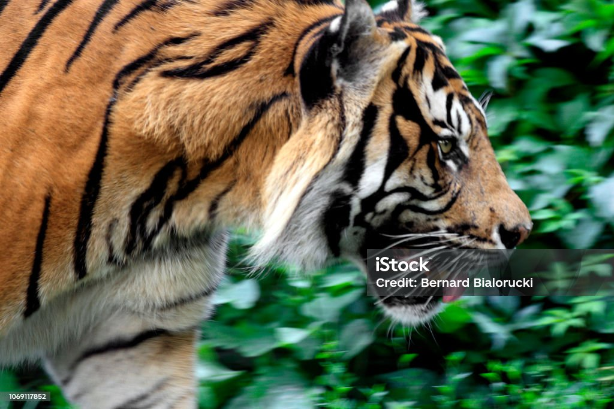

Tygrys
Tygrys – gatunek dużego, drapieżnego ssaka łożyskowego z podrodziny panter w rodzinie kotowatych, największego ze współczesnych pięciu gatunków dzikich kotów z rodzaju Panthera, jeden z największych drapieżników lądowych.
Tygrys – gatunek dużego, drapieżnego ssaka łożyskowego z podrodziny panter w rodzinie kotowatych, największego ze współczesnych pięciu gatunków dzikich kotów z rodzaju Panthera, jeden z największych drapieżników lądowych.